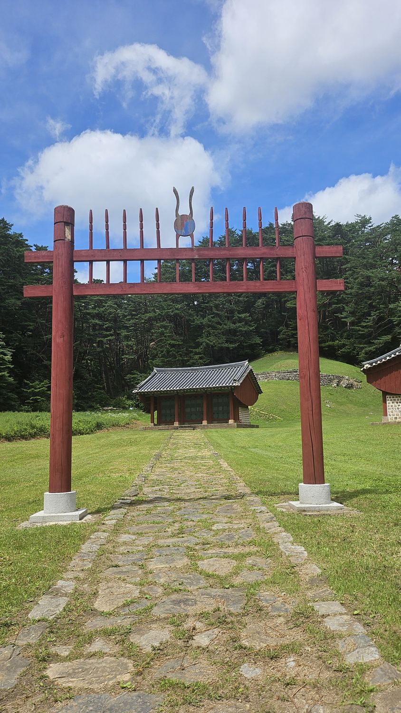
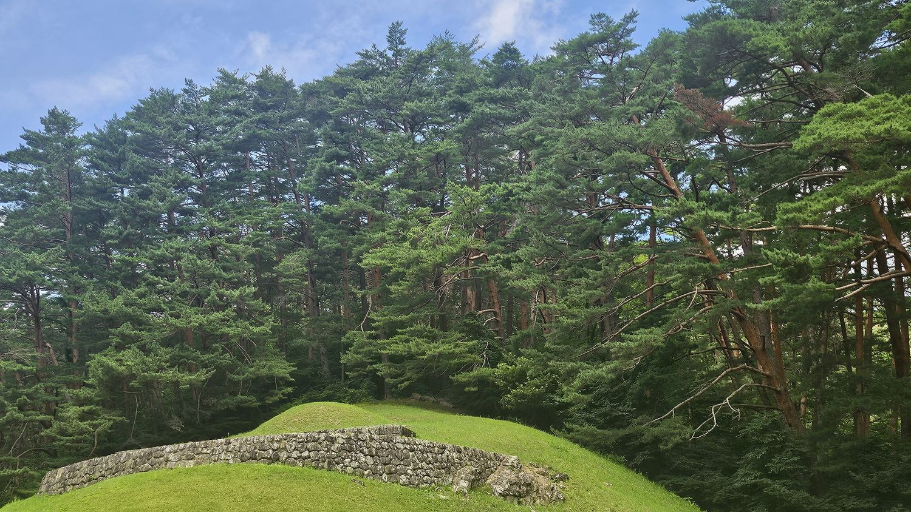
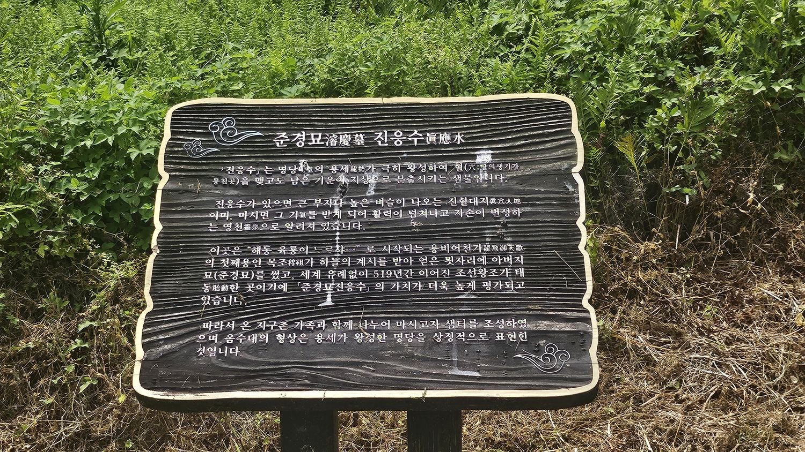
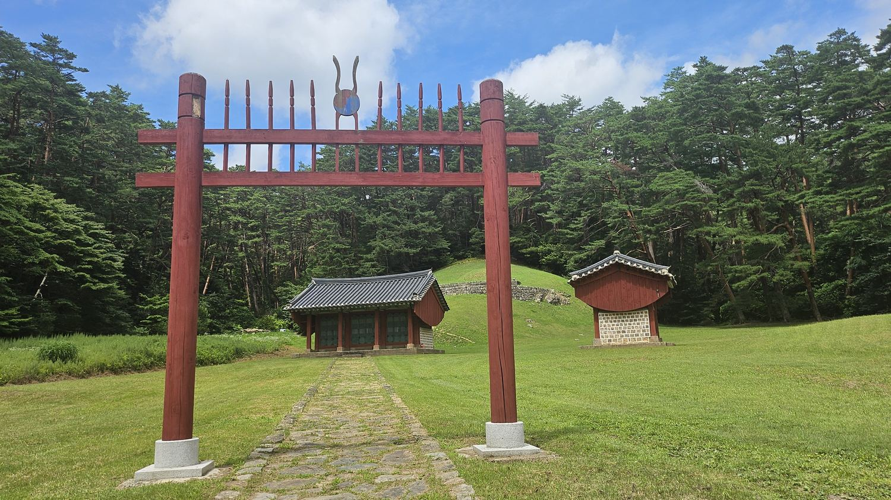
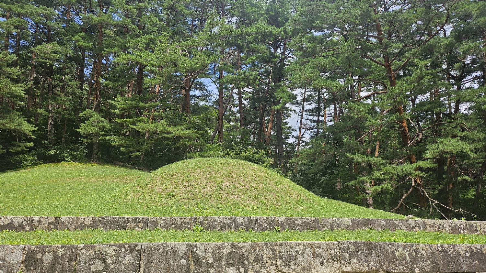
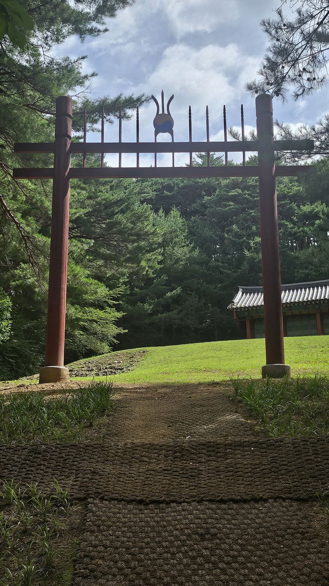
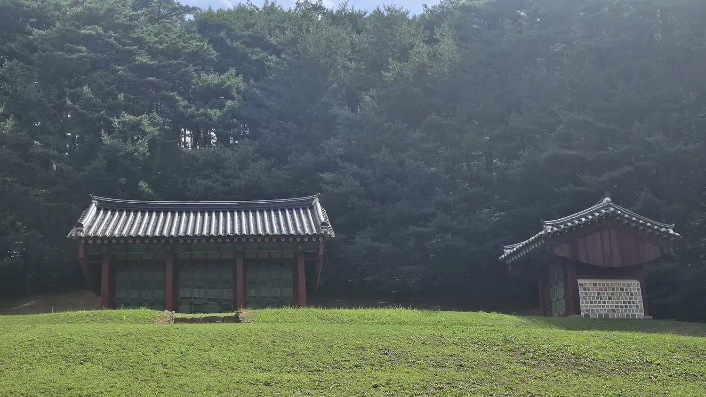
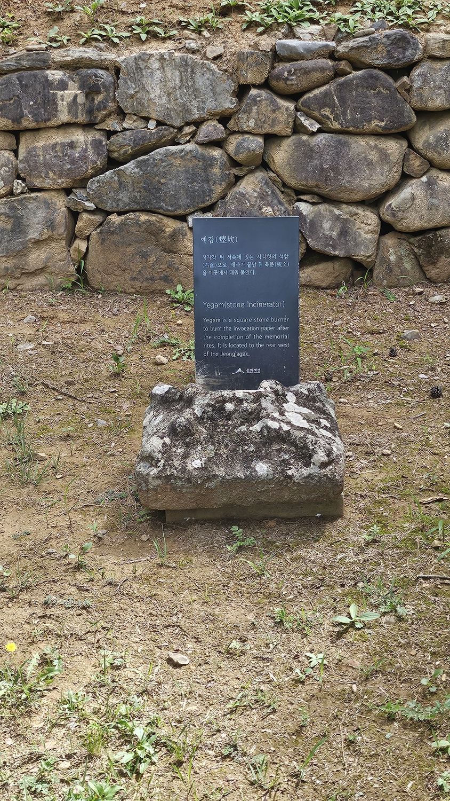
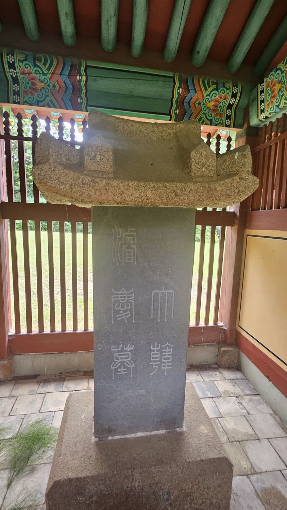

Prologue
오목대에서 이성계가 부른 노래 한 곡이 정몽주를 뛰쳐나가게 만들었을 때, 그 안에 담긴 야망은 그날 갑자기 생긴 게 아니었다. 4대조 이안사가 삼척의 산중에 부모를 묻던 순간, 이미 그 뿌리는 땅속 깊이 내려가 있었다. 오목대에서 시간을 거슬러, 왕조가 시작되기도 전에 이미 정해져 있었다는 이야기의 출발점으로 간다.
망명객 이안사 — 전주에서 삼척까지
전주 이씨의 본향은 전라도 전주다. 그런데 태조의 4대조 목조(이안사)의 부모 묘는 왜 뜬금없이 강원도 삼척, 그것도 심산유곡에 있을까. 답은 도망이다.
이안사는 원래 전주에 살던 호족이었다. 전주의 관기(官妓) 한 명을 두고 지역 우두머리인 산관(山官)과 크게 충돌했는데, 산관이 군사까지 동원해 해치려 하자 이안사는 자신을 따르는 백성 170여 가구를 이끌고 밤새 도망쳐 동해안을 따라 삼척까지 흘러 들어왔다. 삼척은 정착지가 아니라 망명지였던 셈이다.
그런데 얼마 뒤, 전주에서 싸웠던 그 산관이 하필 삼척으로 발령받아 왔다. 이안사는 다시 짐을 싸 함경도(의주)로 떠나야 했다. 하지만 그사이 삼척에서 세상을 떠난 부모님의 묘소만큼은 그대로 두고 떠났다. 쫓기던 호족 가문이 가슴에 품었던 한(恨)과 야망이 삼척의 깊은 산속에 묻힌 채 남겨진 것이다.
답사 동선 — 금강송 숲을 20분 걸어야 만나는 자리
준경묘는 주차장에서 묘역까지 약 1.8km, 걸어서 20~30분이 걸린다. 산책로 내내 하늘을 찌를 듯 곧게 뻗은 금강소나무(황장목)가 빽빽하게 우거져 있어, 걷는 것만으로도 훌륭한 산림욕이 된다.

이 숲에는 흥미로운 뒷이야기가 하나 있다. 입구 근처에는 임업 당국이 전국의 금강소나무 중 형태가 가장 아름답다고 꼽은 소나무 한 그루가 서 있는데, 속리산의 정이품송과 전통 혼례를 올린 것으로 알려져 '미인송'이라 불린다. 실제로 숭례문 복원 공사 때는 이 일대의 금강송이 기둥 부재로 쓰이기도 했다. 명당의 기운을 지킨다는 명목으로 100년 넘게 벌목이 금지된 숲이 만들어낸, 국내 최고 수준의 소나무 군락지다.

백우금관(百牛金棺) — 흰 소 한 마리로 왕을 낳은 꾀
이안사가 아버지 묘 자리를 찾던 중, 지나가던 도승이 혼잣말로 이렇게 탄식했다는 이야기가 전해진다. "이곳은 대명당이라 묘를 쓰면 5대 뒤에 반드시 왕이 태어나겠구나. 다만 소 백 마리(百牛)를 잡고 금관(金棺)을 써야 하니, 대단한 권세가가 아니면 불가능하겠구나." 가난한 이주민이었던 이안사는 꾀를 냈다. 소 백 마리 대신 흰 소(白牛) 한 마리를 잡았다 — '백우'라는 발음이 같은 점을 이용한 것이다. 금관 대신 황금빛 보릿짚을 엮어 관을 감쌌다. 그렇게 장사를 지내고 5대 뒤, 정말로 왕(태조 이성계)이 태어났다는 것이 이 명당 전설의 줄거리다.
백우금관은 사실 여부를 따질 이야기가 아니라, 새 왕조의 뿌리에 신성함을 부여하는 건국설화로 읽어야 한다. 주몽이 알에서 태어나고 박혁거세가 우물가에서 발견됐듯, 왕조를 연 가문에는 어김없이 이런 예언과 신이(神異)의 이야기가 따라붙는다. 백우금관도 그 문법을 그대로 따른다 — 도승의 예언, 흰 소와 보릿짚이라는 구체적 디테일은 이야기를 더 생생하게 만드는 장치이지, 검증의 대상이 아니다. 이안사가 삼척으로 이주해 부모를 묻고 떠났다는 것, 그 후손 중에서 조선 건국자가 나왔다는 것만이 실록과 지리지가 확인해 주는 사실이고, 나머지는 건국설화 특유의 각색으로 받아들이면 된다.
묘역 입구에는 '진응수(眞應水)'라는 샘터가 있다. 명당의 생기가 응결되고도 남은 기운이 지상으로 솟아난 물이라는 설명이 안내판에 적혀 있다. 마셔서 명당의 기운을 나눠 갖고자 조성한 자리라고 하니, 이 역시 백우금관과 같은 계열의 풍수 서사다.

조촐한 격식 — 능을 흉내 냈지만 능은 아닌 자리
숲길을 지나 도착한 묘역은 확실히 격식을 갖추고 있었다. 홍살문, 정자각, 비각이 일직선으로 배치돼 있고, 그 뒤로 둥근 봉분이 나지막한 언덕처럼 자리 잡았다. 조선 왕릉의 기본 골격과 다르지 않다.

그런데 실제로 걸어 들어가 보면, 왕릉급 격식을 갖췄다는 설명과 현장의 인상 사이에 미묘한 낙차가 있다. 정자각과 비각의 규모는 조선 왕릉의 그것보다 한결 작고 소박하다. 무엇보다 비석에 새겨진 글자가 간단하다 — 각각 '대한준경묘(大韓濬慶墓)', '대한영경묘(大韓永慶墓)' 딱 다섯 자뿐이다. 왕릉이라면 마땅히 있어야 할 시호나 존호의 나열, 화려한 문구는 없다. 능제의 틀은 분명히 갖췄지만, 그 안을 채운 격식은 조촐하다 — 이 조촐함이야말로 이 자리의 진짜 신분을 말해준다.

영경묘 — 두타산을 마주한 또 다른 자리
준경묘에서 차로 조금 이동하면 영경묘(永慶墓)를 만난다. 이안사의 어머니, 즉 태조의 5대조모가 잠든 곳이다. 준경묘와 짝을 이루는 묘역이지만 지형의 느낌은 사뭇 다르다. 묘역 앞으로 삼척의 명산 두타산의 웅장한 능선이 안산(案山)처럼 펼쳐져, 준경묘의 아늑하게 감싸인 분위기와는 다른 시원하고 장쾌한 풍경을 보여준다. 묘소 앞쪽으로 둥글게 돋아난 지형(전순·氈脣)도 눈에 띄는데, 명당의 생기가 빠져나가지 않도록 받쳐주는 구조라는 풍수적 설명이 붙어 있다.


영경묘 봉분은 답사 당시 잔디보다 맨흙이 더 많이 드러나 있었다. 준경묘 쪽 봉분이 고른 잔디로 덮여 있던 것과는 다른 인상이다. 관리 시점의 차이인지 다른 이유가 있는지는 현장에서 확인하기 어려웠지만, 같은 시기에 조성된 짝꿍 묘역이라도 그때그때 마주하는 모습은 다를 수 있다는 걸 보여주는 장면이었다.

묘(墓)라 불렀지만 능(陵)처럼 지은 모순
조선의 예법상 왕과 왕비의 무덤은 능(陵), 세자나 대원군급은 원(園), 그 외 왕족과 일반 백성은 묘(墓)로 부른다. 이양무 장군은 왕을 지낸 적 없는 일반 호족이었으니 당연히 '묘'다. 그렇다면 조선 건국 뒤에라도 추존해서 '능'으로 올리면 되지 않았을까 싶지만, 여기에는 넘지 못할 벽이 있었다 — 조선 왕실의 '4대 추존' 원칙이다.
새 왕조가 들어서면 건국자의 4대조까지만 왕으로 추존할 수 있다는 것이 성리학적 예법(종묘 제도)의 원칙이다. 태조는 자신의 4대조인 목조·익조·도조·환조까지만 왕으로 추존해 능을 조영했다. 준경묘의 주인공 이양무는 태조의 5대조였기 때문에, 이 원칙을 벗어나 '능'이라는 이름을 붙일 수 없었다. 그래서 이름 뒤에 경사스러움이 시작됐다는 뜻의 '준경(濬慶)·영경(永慶)'이라는 특별한 고유명사를 붙여 격을 높이는 선에서 타협했다 — 명칭은 법도에 따라 '묘'로 묶어두되, 시설과 격식은 왕릉에 준하게 갖춘 것이다.
비석에 새겨진 두 글자 — 고종의 마지막 정비

조선 초기부터 이 무덤들은 '이릉(伊陵)'이라 불리며 국가의 특별 관리를 받았다. 태조는 조선 건국 직후 삼척군을 삼척부(三陟府)로 승격시켰고, 무덤 주변 산림을 벌목 금지 구역(금산·禁山)으로 지정해 군사와 수호군을 두고 지켰다. 그러나 정식 능으로 승격되지는 못한 채 세월이 흘렀고, 목조가 함경도로 떠난 뒤 정확한 묘소 위치를 두고 수백 년간 논쟁이 이어졌다. 조선 중기 선조 때는 강원도 관찰사로 부임한 정철이 무덤을 대대적으로 수축하자고 건의하기도 했다.
이 논쟁에 마침표를 찍은 건 왕조가 저물어가던 순간이었다. 1897년 대한제국을 선포하며 황제 자리에 오른 고종은, 황제국이 되면서 4대조의 제약에서 벗어나 더 윗대 선조까지 예우할 권위를 얻었다. 명성황후를 잃고 아관파천을 겪으며 흔들리던 황실의 권위를 조상의 뿌리에서 되찾으려 한 것이다. 광무 3년(1899), 고종은 이곳을 5대조의 진짜 묘로 공식 선포하고 '준경묘'·'영경묘'라는 이름을 내렸다. 비석의 글씨는 고종이 직접 쓴 친필이다. 정자각·비각·홍살문 같은 시설도 이때 새로 지어졌다 — 지금 우리가 보는 모습은 조선 초기가 아니라, 나라가 무너지기 직전 대한제국이 완성해 놓은 형태다.
고려 말엔 망명객 가문의 평범한 무덤이었고, 조선 시대엔 법도에 막혀 이름 뒤에 숨은 '이릉'이었으며, 대한제국에 이르러서야 황실의 뿌리를 증명하는 '준경묘·영경묘'로 완성됐다.
— 600년에 걸친 신분 상승의 요약왕조가 시작되기 전, 이미 정해져 있었다
준경묘와 영경묘는 흔히 보는 조선 왕릉과 출발선이 다르다. 이곳은 나라를 세운 사람의 무덤이 아니라, 나라를 세운 사람을 낳은 사람들의 무덤이다. 왕이 되기도 전, 심지어 조선이라는 이름이 생기기도 전부터 이 자리는 존재했다. 도망친 호족이 부모를 묻고 떠난 그 순간부터, 5대 뒤 후손이 왕이 되는 서사는 이미 시작돼 있었던 셈이다.
이제 하늘의 뜻과 조상의 명분은 갖추어졌다. 남은 것은 나라를 세우는 일이었다. 조선은 종묘부터 세우기 시작한다.
답사 정보 / Visitor Info
- 위치
- 강원 삼척시 미로면 준경길(준경묘) · 영경로(영경묘), 두 묘역 간 차량 약 10분 거리
- 입장
- 무료 · 상시 개방
- 소요
- 준경묘 왕복 숲길 포함 약 1시간~1시간 30분, 영경묘 별도 20~30분
- 지정
- 준경묘·영경묘 — 국가지정문화재(사적)
- 준비물
- 편안한 운동화 또는 등산화 (준경묘까지 약 1.8km 숲길을 걸어야 함)
- 연계
- 종묘(약 220km, 서울) — 이양무의 아들 목조(이안사)를 비롯한 추존 4대조가 모셔진 곳